All in One View
Content from Introductions
Last updated on 2026-07-07 | Edit this page
Estimated time: 30 minutes
Overview
Questions
- “What ML/AI tools are you already aware of in healthcare, and what is your immediate gut reaction to them optimism, skepticism, or anxiety?”
- “Where do you think AI can make the biggest impact in your day-to-day workflow: reducing paperwork or assisting in patient diagnosis?”
Objectives
- Establish a shared baseline of understanding regarding the current hype versus the reality of AI in healthcare.
- Uncover the audience’s existing biases, fears, or enthusiasm about machine learning.
- Set expectations that this workshop is about bridging the gap between data science and clinical utility.
Welcome
Welcome, everyone, to today’s workshop. Whether your background is in medicine, data science, administration, or research, you are in the right teams meeting. we are all at different stages in our AI/ML journey. As we all have a different set of experiences and have varying prospective when it comes to what we expect from ML/AI For example:
- If you are a clinician, you speak the language of patient care, workflows, and clinical utility.
- If you are a data scientist, you speak the language of math, matrices, and optimization.
- If you machine learning engineers, you speak the language of numbers and quantifying hallucination.
The magic and the massive frustration of AI in healthcare happens right in the middle. Our goal today isn’t to make clinicians write code, nor is it to turn data scientists into medical doctors. Our goal is to learn how to translate a complex medical reality into a structured data problem, and then translate that model’s output back into something safe and useful at the patient’s bedside.
“We will do this by exploring how these algorithms work, some case studies and exploring the draws backs and how to implemented these models.
RoadMap
 .
.
Why Now?
AI isn’t exploding today because the math is brand new; most of the underlying math has existed for decades. It is exploding because three critical forces have finally collided. The Three Drivers of the Healthcare AI Explosion
Total Digitization of Health Data:
- Twenty years ago, patient data was trapped in paper charts, physical film folders, and fax machines. Today, Electronic Health Records (EHRs) have digitised patient history. We finally have digital repositories of vitals, lab results, and medications that algorithms can actually read.
The Imaging and Genomic Deluge:
- A single high-resolution 3D CT scan or a whole-genome sequencing file contains gigabytes of data. Human brains are spectacular at synthesis, but we physically do not have enough hours in the day to parse the sheer volume of data being generated. We built the sensors to collect the data; now we need the computational “eyes” to help us look at it.
Cheap, Cloud-Scale Compute Power:
- Training a deep learning neural network requires billions of mathematical calculations per second. The rise of specialized hardware (like GPUs) and cloud computing means a model that would have taken a university supercomputer weeks to train ten years ago can now be trained in a few hours for the cost of a few cups of coffee.
Group Discussion Builder
Question
- What ML/AI tools are you already aware of in healthcare, and what is your immediate gut reaction to them optimism, skepticism, or anxiety?
- AI in healthcare isn’t a futuristic concept; it is already operating in triaging, billing, and radiology.
- The explosion of healthcare AI is driven by three factors: massive computing power, digitized health records (EHRs), and an explosion of genomic data.
- Effective healthcare AI requires collaboration data scientists understand the math, but clinicians understand the patient.
Content from How ML/AI Works—A Foundation
Last updated on 2026-07-05 | Edit this page
Estimated time: 75 minutes
Overview
Questions
- “If Traditional ML requires humans to pick the variables and Deep Learning finds them automatically, which one do you think clinicians trust more right now, and why?”
- “If a deep learning model is 99% accurate at predicting a stroke but cannot explain why it made that choice, would you comfortably use it on a patient?”
Objectives
- Explain how computers process diverse healthcare data streams (images, notes, waves).
- Clearly contrast traditional machine learning (rules-based/checklists) with deep learning (pattern-recognition).
- Define the concept of a “black box” model and why it matters in medicine.
What a Computer Sees
Core Concept
To understand how a computer interprets medical data, we must contrast it with the perspective of a medical professional. For instance, when a radiologist analyzes an X-ray, they rely on clinical experience and anatomical knowledge to detect abnormalities or identify changes across a patient’s historical imaging. Similarly, a physician can review an Electronic Health Record (EHR) timeline to track a patient’s decline and predict potential diagnoses. In contrast, computers are entirely blind to these clinical contexts; they process data strictly as arrays of binary code. The core challenge, therefore, lies in translating these complex medical concepts into a structured format that a machine can interpret and learn from.
Medical Data Forms & Mathematical Realities
To begin, we will examine how computers interpret and process various data modalities.
Images (Spatial Grids)
When a radiologist views a chest X-ray, they interpret a continuous landscape of varying brightness. These grayscale gradients tell a physiological story: dense structures like bone block X-rays and appear bright white, air-filled lungs allow rays to pass through and appear dark, and soft tissues occupy the gray spaces in between. Humans effortlessly synthesize these shades into an understanding of anatomical structures and potential pathology.
A computer, however, possesses no intrinsic concept of “anatomy,” “brightness,” or “shadow.” To a machine, a chest X-ray is flattened into a two-dimensional grid called a pixel matrix. If it is a standard grayscale medical image, each individual pixel is assigned a numerical value typically ranging from 0 (pure black) to 255 (pure white) in an 8-bit system, or up to 4095 in higher-resolution 12-bit medical imaging (DICOM format).
Therefore, where a human sees a lung nodule, the computer simply registers a localized cluster of higher numerical values relative to the lower numbers surrounding it. The challenge of computer vision in radiology is training algorithms to recognize these mathematical patterns and map them to clinical realities.
 .
.
Note: This image has been normalised
Text & EHR (Tokenisation & Vectors)
A significant portion of medical data consists of textual information, such as clinical notes and metadata descriptions. The challenge is that computers cannot inherently understand text. While we could theoretically encode words alphabetically (e.g., assigning a=1, b=2, so “acute” becomes \([1, 3, 21, 20, 5]\)), this approach fails in practice. Most machine learning models require input data to be of a fixed length, and this method creates variable-length vectors. Furthermore, it provides the machine with zero semantic understanding of the words.
To solve this, Natural Language Processing (NLP) uses tokenization alongside vector embeddings. Tokenization breaks the text down into smaller, manageable units (tokens), which are then converted into dense mathematical vectors. Positioned within a high-dimensional mathematical space, these vectors group similar medical concepts close together, allowing the machine to grasp the relationships between words.
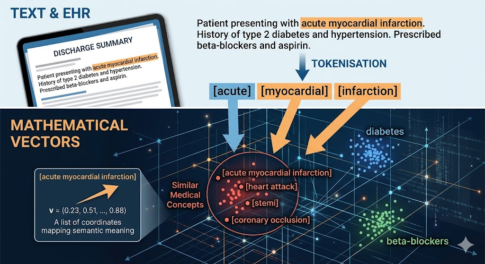
.Signals (Frequencies Over Time)
Continuous bioelectrical signals, such as Electrocardiograms (ECGs) and Electroencephalograms (EEGs), originate as analog waveforms reflecting the heart’s electrical conduction or the brain’s postsynaptic potentials. To process these signals computationally, they must undergo analog-to-digital conversion (ADC). This process samples the continuous wave at uniform intervals—often thousands of times per second (measured in Hertz) capturing rapid fluctuations in amplitude and frequency.
However, a computer possesses no innate understanding of a “waveform” or its physiological significance. To the machine, the entire biological phenomenon is reduced to a one-dimensional array of floating-point numbers representing voltage amplitudes at discrete time steps. The core challenge in bio-signal machine learning is developing algorithms that can reconstruct the underlying physiological features—such as an R-peak in an ECG or an alpha wave in an EEG solely from this raw, sequential numerical data.
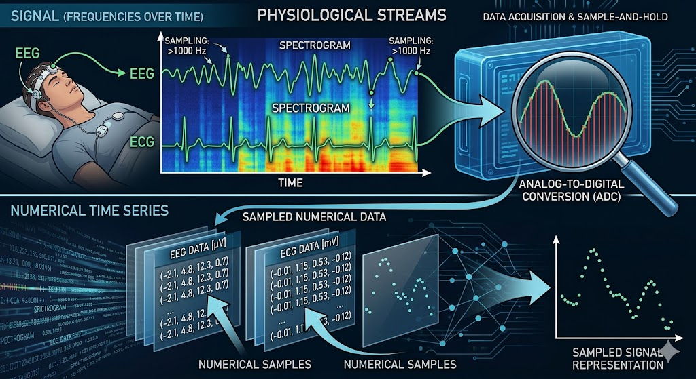
.Traditional Machine Learning
Core Concept
You are likely familiar with deep learning, the driving force behind most current AI research. While powerful, it can be incredibly complex and ill-suited for certain problems, a challenge we will explore later. Before deep learning dominated the field, we relied on traditional machine learning. These foundational methods use defined mathematical rules to analyse and separate data, making them highly interpretable, transparent, and straightforward to implement. These mathematical rules usually cater to a person’s known knowledge and leverages it.
The Engineering Reality: Feature Engineering
In traditional ML, humans must do the heavy lifting of extraction. We use our clinical knowledge to define the exact metrics, called features, that the model is allowed to look at. E.g. like rules.
- Example: To predict diabetes risk, a human programmer must explicitly extract columns for Age, BMI, and HbA1c.
- The Catch: If a critical piece of data (like a sudden change in a patient’s sleep pattern) is hidden in the raw medical record but wasn’t engineered into a data column by the developers, the model has zero capacity to notice it.
Examples of Core Architecture Reference
The table below displays some example ML and how standard clinical inputs map to traditional algorithms.
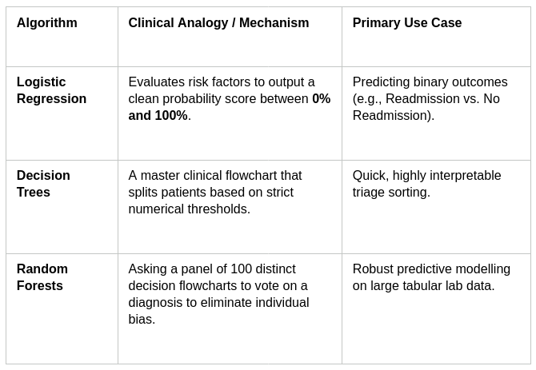
.Logistic Regression
The Starting Point: The Linear Formula
Logistic regression starts out exactly like standard linear regression (the classic line of best fit). It assigns a specific weight (or importance) to each of your clinical inputs. Let’s say we want to predict the risk of a patient being readmitted to the hospital based on two features: Age and Number of Prior Admissions. The model builds an equation that looks like this:
\(Log- Odds-Value = \beta_0+ (\beta_1.Age) + ( \beta_2. Prior-admissions)\)
- \(\beta_0\) is the baseline starting point (the intercept).
- \(\beta_1\) and \(\beta_2\) are the weights the model learns during training. If prior admissions are a massive risk factor, \(\beta_2\) will be a large positive number.
The Problem
If a patient is 80 years old and has 10 prior admissions, this linear math might spit out a raw score of +45.2. If a patient is young and healthy, it might spit out -12.4. A score of 45.2 doesn’t make sense as a probability. We need a way to squash that infinite line down into a strict bracket between 0 and 1.
The Sigmoid Function
To turn that raw score into a probability, logistic regression passes the result through a mathematical curve called the Sigmoid (logistic) function. The mathematical formula for the sigmoid curve is:
\(S(z) = \frac{1}{1+ e^{-z}}\)
Where z is the raw log-odds score from our linear equation. No matter how massive, tiny, positive, or negative the score z is, plugging it into this function forces the output to bend into an S-shaped curve that never goes below 0 and never goes above 1.
- If the raw score is a huge positive number, the output squashes tightly up against 1.0 (100% probability).
- If the raw score is a huge negative number, the output drops tightly down to 0.0 (0% probability).
- If the raw score is exactly 0, the output lands perfectly at 0.5 (50% probability).
Making the Decision: The Threshold
Once the sigmoid function outputs a probability (e.g., 0.74), the model applies a classification threshold—usually set at 0.5 (50%) by default—to make a final decision:
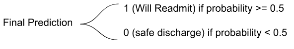
.Clinical Nuance
In medicine, we rarely stick to the default 0.5 threshold. If we are screening for a deadly disease, we want to catch everyone. We might lower the threshold to 0.2 (20%). This makes the model highly sensitive, flagging patients even if there is only a 20% chance they are sick, ensuring we don’t miss a critical diagnosis.
Decision Trees
At its core, a Decision Tree works exactly like a flowchart. It breaks down a complex database of patients into smaller, cleaner groups by asking a series of yes-or-no questions based on the data. It is one of the most transparent algorithms in machine learning because you can follow the exact path the model took to reach its final diagnosis.
The Anatomy of a Tree
Before looking at how a tree is built, it helps to understand its structure using standard terminology:
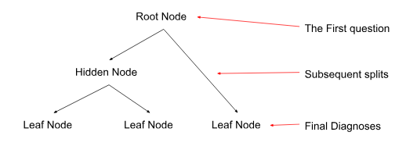
.- Root Node: The single master question at the very top that splits the entire patient dataset into two initial groups.
- Internal / Decision Nodes: Subsequent questions that continue to branch out based on previous answers.
- Leaf Nodes: The end of the road. These nodes contain the final prediction (e.g., “High Risk of ICU Admission” or “Low Risk”). A leaf node doesn’t split any further.
How the Tree Chooses its Questions
A human clinician builds a flowchart based on guidelines (like ACLS protocols). A Decision Tree, however, builds its flowchart by calculating math metrics directly from your raw data.
The model’s goal is to create pure leaf nodes—meaning nodes where almost 100% of the patients inside share the same outcome. To do this, it scans every single variable in your dataset (Age, Blood Pressure, Troponin levels, etc.) and tries out every possible split to find the one that reduces chaos the most.
The mathematical engine driving this is usually Gini Impurity or Information Gain (Entropy).
A Conceptual Example: Predicting Heart Attacks
Imagine a dataset of 100 patients. 50 had a heart attack (+) and 50 did not (-). The dataset is currently 50/50, completely “impure.” The algorithm evaluates two potential options for its very first split (the Root Node):
Option A: Split by Age (>65)
- Left branch (>65): 40 patients (30 had a heart attack, 10 did not) (Somewhat cleaner)
- Right branch (≤65): 60 patients (20 had a heart attack, 40 did not) (Somewhat cleaner)
Option B: Split by Troponin Levels (Elevated vs. Normal)
- Left branch (Elevated): 48 patients (46 had a heart attack, 2 did not) (Highly Pure!)
- Right branch (Normal): 52 patients (4 had a heart attack, 48 did not) (Highly Pure!)
The Decision Tree calculates the mathematical impurity score for both options. Because Option B creates much cleaner, more definitive groups, the algorithm chooses Troponin Levels as its root node question. It then repeats this exact calculation for the next sub-branches.
Stopping the Growth: The Danger of Overfitting
If left completely alone, a decision tree will keep asking questions until every single leaf node is 100% pure even if it means creating a specific branch for a single outlier patient (e.g., “If Age is 42, AND Troponin is normal, AND the patient has a tattoo of a dolphin, then they are at risk”). This fatal flaw is called Overfitting. The model memorises the training data perfectly but fails when applied to new patients because it mistook random noise for a real clinical trend.
How We Fix It
To keep a tree accurate and generalizable, data scientists use two primary techniques:
- Pre-Pruning (Setting Max Depth): Limiting how tall the tree can grow. For example, telling the algorithm: “You are only allowed to ask a maximum of 4 nested questions.”
- Post-Pruning: Letting the tree grow completely wild, and then cutting away branches that provide very little statistical value.
Random Forest
If an individual Decision Tree is like asking a single doctor for an opinion, a Random Forest is like gathering a panel of 500 diverse specialists, letting them look at different parts of the patient’s record, and taking a majority vote. It is designed specifically to fix the biggest flaw of individual decision trees: their extreme instability and tendency to memorise noise (overfit). Here is the exact mechanics of how a Random Forest builds its democratic system.
The Core Strategy: Ensemble Learning
Random Forest is an ensemble method—meaning it combines multiple weak or unstable models into one highly accurate, stable framework. It achieves this using a dual strategy called Bagging and Feature Randomness. If you simply built 500 trees on the exact same dataset, they would all choose the exact same questions and give you identical answers. To create a true “forest,” every single tree must be intentionally forced to see the world a little differently.
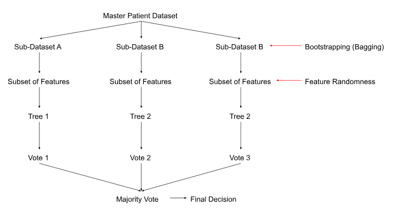
.Step 1: Bootstrapping (Row Randomness)
Imagine you have a master clinical trial dataset of 1,000 patients. Before building Tree #1, the algorithm takes a random sample of 1,000 patients with replacement (meaning the same patient can be picked more than once, and some patients won’t be picked at all).
- Tree 1 gets an altered variation of the dataset.
- Tree 2 gets a completely different random shuffle.
This data-shuffling technique is called Bootstrapping. It ensures that no single outlier patient can skew the entire forest, because that outlier will only appear in a fraction of the trees.
Step 2: Random Subsets of Features (Column Randomness)
This is where the magic happens. In a standard decision tree, the algorithm searches through every single variable in the dataset to find the absolute best question to ask. In a Random Forest, at every single branch split, the tree is intentionally blinded. It is only allowed to choose from a random subset of features (typically the square root of the total number of features available). Why this is crucial:
- Imagine you have a dataset predicting cardiac risk, and Troponin Level is an incredibly dominant variable.
- If you don’t restrict the features, every single tree will pick Troponin Level as its very first question at the top of the tree. The trees will all look highly similar.
- By forcing feature randomness, some trees will be blocked from seeing Troponin entirely. They are forced to build logic using secondary predictors, like Blood Pressure, Family History, or ECG Segment Shifts.
- This uncovers hidden multi-variable interactions that a single dominant variable would normally overshadow.
Step 3: Aggregation (The Majority Vote)
Once the forest is grown (usually consisting of 100 to 500 deep, unpruned trees), a new patient arrives in the clinic. The patient’s data is run down every single tree in the forest simultaneously.
- For Classification (e.g., Sepsis vs. No Sepsis): If 400 trees vote “Sepsis Risk” and 100 trees vote “Low Risk,” the final output of the forest is Sepsis Risk (by an 80% majority vote).
- For Regression (e.g., Predicting length of hospital stay): The forest averages the outputs. If Tree 1 says 3 days, Tree 2 says 5 days, and Tree 3 says 4 days, the final prediction is 4 days.
Deep Learning & Neural Networks
Core Concept
“Now let’s step away from the checklist. Think of a seasoned attending clinician who walks up to a complex pathology slide, glances at it, and immediately feels uneasy. They might say, ‘I can’t point to a single checklist item, but based on the thousands of cases I’ve seen over twenty years, this looks suspicious.’ That is Deep Learning.”
The Shift: Representation Learning
Instead of a human hand-selecting the variables, deep learning utilises neural networks to ingest raw data (like an unparsed pathology image or raw audio) and discover the features entirely on its own.
How Information Flows Through a Network
Information moves sequentially through distinct structural layers:
- Input Layer: Receives the raw numbers (e.g., raw pixel intensities of a dermatology image).
- Hidden Layers: The magic happens here. The early layers find incredibly simple patterns like raw edges or sharp contrasts.
- Middle layers stitch those edges into textures and basic shapes. Late hidden layers combine those shapes into complex structures (e.g., asymmetrical lesion borders or irregular cell nuclei).
- Output Layer: Delivers the final clinical prediction (e.g., “94% probability of Malignant Melanoma”).
 .
.
How they learn
At its core, a neural network learns through a process of trial, error, and adjustment. Think of it like a person learning to shoot a basketball: they take a shot, see how far off they were, and adjust their form for the next attempt.
1. The Guess (Forward Propagation)
The network is given some input data (for example, an image of a cat). It passes this information through layers of interconnected mathematical “neurons.”
Each connection has a weight (which determines how important that connection is) and a bias (an extra offset). The network multiplies the input data by these weights, adds the biases, and makes a prediction—for instance, guessing there is a \(60\%\) chance the image is a dog.
2. Measuring the Error (The Loss Function)
Next, the network compares its guess to the actual truth (the correct label, which is “cat”).
It uses a mathematical formula called a loss function to calculate exactly how wrong it was. A high loss means the guess was terrible; a low loss means it was very close.
3. Finding the Blame (Backpropagation)
Once the error is calculated, the network works backward from the output layer to the input layer. It uses calculus (specifically, gradients) to figure out exactly which weights and biases contributed most to the mistake.
In simple terms: It calculates, “If I change this specific weight by a tiny amount, will the error go up or down?”
4. Making the Adjustment (Gradient Descent)
Finally, an optimization algorithm (the most common is called Gradient Descent) tweaks the weights and biases in the direction that reduces the error.
The network doesn’t change everything all at once. It takes a tiny, controlled step—governed by a setting called the learning rate—to avoid overcorrecting.
Model Types Matched to Medical Data
Core Concept
“Just like you wouldn’t use a stethoscope to check a reflex, we don’t use the same AI model architecture for every clinical problem. We match the math structure to the data shape.”
The Healthcare AI Toolkit
Computer Vision via Convolutional Neural Networks (CNNs) - Best For: Spatial data where the relationship between neighbouring pixels matters (X-rays, MRIs, CT scans, dermatology photos). - How it works: It slides small mathematical filters across an image to identify shapes and abnormalities regardless of where they appear on the scan.
Convolutional Neural Networks (CNNs)
- CNNs process data like images by passing a small filter (or kernel) across the input space to detect localized features like edges, textures, and shapes.
- This process uses shared weights, meaning the same filter is applied across the entire input, vastly reducing the number of parameters compared to fully connected networks.
- Through pooling layers, CNNs downsample the data to achieve translation invariance, allowing them to recognize an object no matter where it appears in the frame.
- They build a spatial hierarchy, where early layers detect simple features (lines) and deeper layers combine them into complex concepts (faces or objects).
- The core inductive bias of a CNN is locality, operating on the strict assumption that neighboring pixels or data points are highly correlated.
 .
.
Transformer Networks
- Transformers process entire sequences simultaneously rather than step-by-step, completely eliminating the need for recurrent loops (like RNNs or LSTMs).
- They rely on a self-attention mechanism to mathematically score and weight the relationship between every single element in a sequence, regardless of how far apart they are.
- Because they lack an inherent sense of order, they use positional encodings added to the input embeddings to retain information about the sequence structure.
- They capture global context dynamically, allowing the network to understand the meaning of a word or pixel based entirely on its surrounding environment.
- Their architecture scales exceptionally well with massive datasets and compute power, making them the foundational backbone for modern large language and multi-modal models.
 .
.
Tabular Models
Best For: Standard spreadsheet-style data (vitals logs, comprehensive metabolic panels, demographic registries). How it works: Optimised to process columns of numbers and categorical values rapidly without needing the massive computational power required for images or text.
The Unique Challenge of Medical Tables
Tabular data is messy because it is heterogeneous. In a single row for an ICU patient, a model must simultaneously process:
- Continuous Numerical Values: Lab results (e.g., Potassium: 4.2, WBC: 11.5).
- Categorical Options: Non-numerical categories (e.g., Blood Type: O+, Sex: Female).
- High-Cardinality Data: Hundreds of unique categorical codes (e.g., specific ICD-10 diagnostic codes).
- Missing Data: The reality of medicine. A patient might not have had a specific rare lab test ordered, leaving that cell completely blank.
The Gold Standard: Gradient Boosted Decision Trees (GBDTs)
While we previously looked at Random Forests (where hundreds of trees vote simultaneously in parallel), the absolute kings of tabular data are Gradient Boosted Decision Trees (popularised by frameworks like XGBoost, LightGBM, and CatBoost). Instead of building trees independently, GBDTs build trees sequentially, with each new tree acting as a correction mechanism for the mistakes of the previous ones.
 .
.
The Error-Correction Mechanics
Imagine we are training a model to predict a patient’s total length of hospital stay (in days) based on their admission vitals:
- Tree 1 (The Base Guess): Tree 1 looks at the data and makes a crude initial prediction. For Patient A, it predicts a stay of 5 days. However, the patient actually stays for 8 days.
- Calculate the Residual: The model calculates the error (the residual): Actual (8) - Prediction (5) = +3 days
- Tree 2 (The Correction): Tree 2 is not trained to predict the total length of stay. It is trained specifically to predict the error (+3). If Tree 2 successfully predicts +2.5, the combined prediction of the model becomes: 5+ 2.5 = 7.5 days
- Iteration: This loop repeats hundreds of times. The final prediction formula updates sequentially: Fm (x) = Fm -1(x) + mhm(x) Where Fm-1(x) is the aggregated prediction from all previous trees, hm(x) is the new tree targeting the remaining errors, and \(\gamma_m\) is a shrinking factor (learning rate) to prevent the model from overcorrecting too fast.
Handling Categorical Data via Embeddings
Traditional models struggle with text categories like “Diagnosis: Heart Failure.” To process this, modern tabular architectures use Categorical Embeddings (similar to how Transformers process words). Instead of converting a diagnosis into a meaningless, arbitrary number, the model converts it into a small vector of floating numbers. During training, the model adjusts these numbers so that clinically similar diagnoses (like Heart Failure and Cardiomyopathy) end up with highly similar mathematical coordinates, helping the model generalise across related diseases. ### Why Deep Learning Often Loses to Trees on Tables It surprises many clinicians to learn that for standard tabular data, deep artificial neural networks are frequently outperformed by basic tree-based models like XGBoost. There are three primary reasons for this:
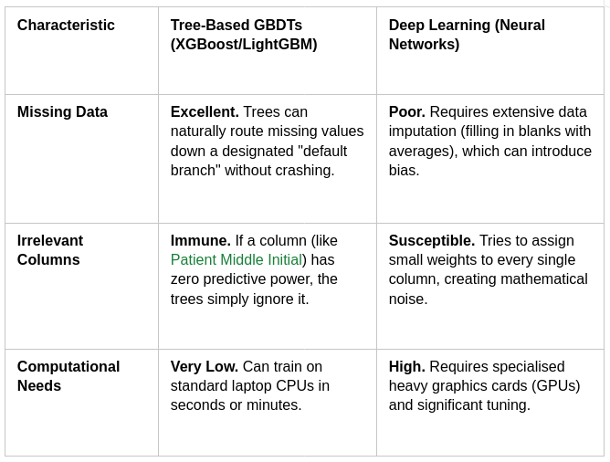
.The Modern Exception (Tabular Transformers): In recent years, architectures like TabNet and FT-Transformer have brought self-attention mechanisms to tables, treating each column header like a token in a sentence. While powerful for massive datasets with hundreds of millions of rows, GBDTs remain the pragmatic benchmark for typical hospital-scale databases.
Summary & Interactive Q&A (10 Mins)
Key Takeaway: Traditional ML requires human-guided checklists (Feature Engineering), whereas Deep Learning develops internal intuition (Representation Learning) by parsing data through deep layers of artificial neurons. Choosing the right tool depends entirely on whether your patient data looks like a table, a picture, or a paragraph.
Group Discussion Builder (10 mins)
- Prompt: “If Traditional ML requires humans to pick the features, and Deep Learning finds them automatically, which one do you think clinicians trust more right now, and why?”
- The Goal: Prompt the realisation that Traditional ML is often preferred because it is interpretable (a decision tree shows its work), whereas Deep Learning can feel like an untrustworthy “black box.”
- Data Conversion: Computers do not see an X-ray or a clinical note; they see matrices of numbers (pixels) or mathematical vectors (text tokens).
- Traditional ML: Requires human “feature engineering.” A human must explicitly tell the model which variables to look at (e.g., Blood Pressure + Age = Risk).
- Deep Learning: Uses neural networks to automatically discover complex, non-linear features from raw data (e.g., identifying a subtle texture on a pathology slide without being told what to look for).
Content from ML/AI in Healthcare Applications
Last updated on 2026-07-05 | Edit this page
Estimated time: 60 minutes
Overview
Questions
- “What do you think is currently holding back these highly accurate models from being deployed in every single hospital tomorrow?”
- “When an AI model is used as a ‘second reader’ in radiology and disagrees with the human doctor, how should the clinical team resolve the conflict?”
Objectives
- Analyze real-world case studies of AI proving clinical utility across imaging, risk scoring, and genomics.
- Understand how data inputs translate directly into predictive outputs in a clinical setting.
- Identify the real-world operational bottlenecks that keep validated models out of the clinic.
Deep Dive: 4 Clinical Use Cases
Next, we will look at how ML/AI is applied in clinical settings. Deploying experimental technologies in healthcare is incredibly difficult, and applications vary widely because regulatory processes differ by country. To guide you through this, we have broken the section down into four distinct case studies. Each case study features two research papers detailing the technology’s application and results. Keep in mind that this is just a snapshot of the field; we chose these specific examples to highlight how ML/AI can handle many different types of medical data (e.g images, continuous data and DNA/RNA sequence.
Case 1: Breast Cancer Imaging & Computer Vision
Core Concept
Mammography interpretation is notoriously challenging. A radiologist may review over a hundred scans a day, searching for indicators such as microcalcifications—tiny calcium deposits that often represent the earliest signs of breast cancer. Beyond identifying clearly defined regions, radiologists must detect subtle structural anomalies; for instance, an obscured lesion might only be betrayed by the architectural distortion it causes in surrounding ligaments.
Furthermore, breast cancer detection is inherently complicated by anatomical variations, such as dense breast tissue, which can easily conceal a tumor. Consequently, clinical screening protocols typically rely on a multimodal approach—combining various imaging techniques, blood tests, and biopsies. For the purposes of this case study, however, we will focus exclusively on the mammographic component.
Machine learning and AI offer valuable clinical assistance in this domain due to their proven capacity for detecting highly subtle tissue changes that the human eye might overlook. Additionally, unlike radiologists who face the cognitive fatigue of a demanding shift, computer vision models maintain consistent performance. This is not to suggest that ML/AI models are flawless; they are subject to their own limitations and biases, and unmonitored deployment could lead to catastrophic diagnostic errors.
Therefore, its a trade off.
ML/AI Features & Mechanics for breats imaging
- Pixel-Level Texture Gradients: The model calculates sudden shifts in contrast between adjacent pixels that can highlight subtle masses before they form distinct borders.
- Edge Sharpening: It traces micro-margins of structural changes, evaluating whether an asymmetry matches benign tissue variations or malignant architectures.
- Density Variations: It isolates localised dense regions that might hide behind or within dense breast tissue, acting as an automated second set of eyes to catch what human eyes could miss during fatigue periods.
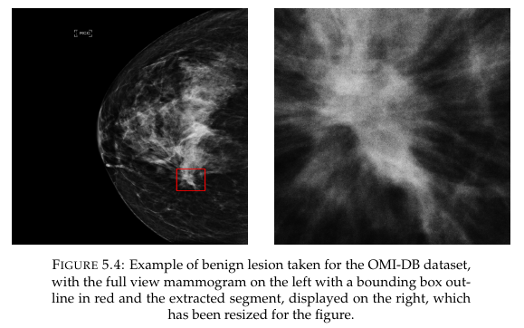
.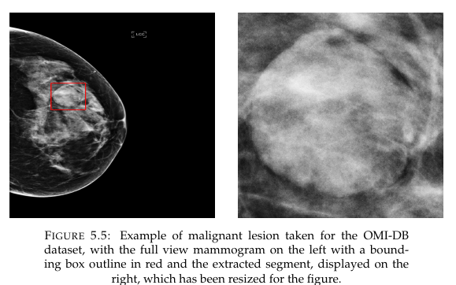
.Clinical studies
In this section, we examine two pivotal studies. The first is the GEMINI project (Grampian’s Evaluation of Mia in an Innovative National Breast Screening Initiative), which evaluated the integration of the ML/AI software ‘Mia’ into the NHS Grampian screening programme. The second is the MASAI trial (Mammography Screening with Artificial Intelligence) conducted in Sweden, which investigated the impact of incorporating ML/AI directly into the mammogram reading workflow.
GEMINI
The GEMINI study evaluated the prospective integration of an AI software tool, ‘Mia’, into the NHS breast screening workflow. Analyzing data from 10,889 women, the researchers utilized a combination of live integration and simulation modeling to assess 17 distinct operational workflows. It is worth noting that these 17 pathways did not rely on 17 different AI models; rather, they represented minor procedural variations of the same underlying tool, tested individually or in combination to identify the most efficient implementation strategy.
Broadly, these workflows can be categorized into two primary strategies: automated triage and supplemental reading (augmenting the standard double-reading protocol). The study concluded that an AI-supported workflow significantly optimized clinical outcomes, increasing cancer detection by approximately 10.4% (equating to an additional 1 cancer detected per 1,000 women screened). Remarkably, this improvement was achieved while maintaining a stable recall rate and reducing the overall reader workload by 31%.
Additional findings:
- Shift in Diagnostic Metrics: The Cancer Detection Rate (CDR) was notably higher during the GEMINI study period compared to the historical baseline (9.7 vs. 8.0 per 1,000), while the final recall rate was lower (4.5% vs. 5.0%). These shifts may be attributed to baseline population changes during the COVID-19 pandemic or heightened clinical awareness among the human readers.
- Hardware and Software Controls: All modifications to the mammography imaging systems (both hardware upgrades and software patches) were strictly paused for the duration of the study, as prior research indicates that changing the imaging acquisition environment can significantly impact AI performance.
- Standalone AI Recall Variability: At the designated operational point (OP2), the AI’s standalone recall rate was higher in this prospective cohort than in preceding retrospective evaluations (14.6% vs. 13.0%). This variance likely stems from natural cohort variability or an interim software update applied to the mammography machines just prior to the study’s commencement.
- Workflow Trade-offs and Arbitration: Different workflow configurations introduced distinct sensitivity and specificity trade-offs. Certain setups yielded a high volume of cases flagged for additional clinical arbitration. However, senior readers successfully dismissed over half of these AI-generated arbitration flags by reviewing historical screenings, thereby maintaining strict clinical standards without inflating the final recall rate.
MASAI
The MASAI trial (Mammography Screening with Artificial Intelligence), conducted in Sweden, evaluated the integration of ML/AI into the screening workflow with the dual objectives of enhancing diagnostic accuracy and reducing screen-reading time. This randomized controlled trial enrolled approximately 80,000 women aged 40–80 across four screening sites, allocating participants in a 1:1 ratio to either an AI-supported screening workflow or the standard human double-reading protocol.
The intervention utilized the Transpara system (version 1.7.0), which generates an examination-based malignancy risk score on a 10-level scale. This score was used to triage cases: examinations scoring 1–9 were assigned to a single human reader, while a score of 10 mandated standard double reading. Radiologists had access to the AI risk scores for all examinations, alongside computer-aided detection (CAD) marks for scans scoring between 8 and 10.
Key Results & Clinical Findings:
- Positive Predictive Value (PPV): The PPV of recall was significantly higher in the AI-intervention group at 28.3% (95% CI: 25.3–31.5) compared to 24.8% (95% CI: 21.9–28.0) in the control group.
- Cancer Profiles: In the intervention group, 244 cancers were detected, of which 184 (75%) were invasive and 60 (25%) were in situ. In the control group, 203 cancers were detected, with 165 (81%) being invasive and 38 (19%) in situ.
- Workload Reduction: The overall screen-reading workload was reduced by 44.3% in the AI-supported arm.
Ultimately, AI-supported mammography achieved a similar cancer detection rate to standard double reading but with a substantially lower operational workload, demonstrating the clinical safety of the approach. Consequently, the trial was not halted, and the primary endpoint—the interval cancer rate—will be formally assessed in 100,000 enrolled participants following a two-year follow-up period.
key details
A key objective in this study design was managing automation bias. The researchers’ strategy was to use AI to triage cases into single or double human reading paths, while giving radiologists access to AI risk scores and CAD marks right when they were evaluating the images. Ironically, the idea was to actually take advantage of the natural bias that AI introduces to the workflow. The approach proved highly effective: it cut the overall screen-reading workload by almost 50% without altering the baseline rates for recalls, false positives, or consensus meetings.
The technical setup of the AI system worked as follows:
- Malignancy Risk Scores: The AI provided an exam-level score on a continuous scale from 1 to 10. For ease of use, these were grouped into a 10-level discrete scale, calibrated so that roughly 10% of the total screening population fell into each score level.
- CAD Marks: To flag localized abnormalities like calcifications or soft-tissue lesions, the system used a regional risk scale from 1 to 98.
- Clutter Control: To prevent an overwhelming number of visual alerts from distracting the radiologists or causing unnecessary false alarms, CAD marks were heavily restricted. They were preconfigured to only appear on higher-risk scans (scores 8, 9, and 10), which accounted for about 30% of all cases and required a localized threshold score over 42.
Papers
Lång, K. et al. Artificial intelligence-supported screen reading versus standard double reading in the Mammography Screening with Artificial Intelligence trial (MASAI): a clinical safety analysis of a randomised, controlled, non-inferiority, single-blinded, screening accuracy study. The Lancet Oncology 24, 936–944 (2023).
de Vries, C. F. et al. Prospective evaluation of artificial intelligence integration into breast cancer screening in multiple workflow settings: the GEMINI study. Nat Cancer 7, 484–493 (2026).
Case 2: Patient Risk Analysis & Tabular Prediction
Core Concept
“In an intensive care setting, sepsis doesn’t just hit a patient out of nowhere—it drops clues hours in advance. Predictive tabular models pull disparate data points straight from the electronic health record to flag a crashing patient before clinical decompensation becomes obvious.”
The Features & Mechanics
- Vital Sign Trend Cross-Matching: Rather than setting off an alarm for a single isolated parameter, the model looks for complex multi-system trends over time. For instance, it flags when a subtle heart rate elevation occurs simultaneously with a downward drift in blood pressure.
- Lab Value Concurrency: It ingests real-time lab updates, tracking indicators like steady white blood cell (WBC) count climbs or unexpected lactate level increases.
- Demographic Context Filters: It weights these real-time signals against static risk factors, including age, chronic comorbidities, and recent surgical history, to output an updated risk score.
 .
.
Evaluating In-hospital cardiac arrest (IHCA)
While early detection of clinical deterioration significantly improves patient outcomes, traditional screening criteria rely primarily on static, “on-the-spot” vital sign measurements. This retrospective study investigated whether incorporating longitudinal trend values over time improves the prediction of severe adverse events (such as unexpected cardiac arrest or unplanned ICU admission) among hospitalized patients.
Methodology
The study analyzed data from a cohort of 24,509 inpatients, comparing 54 patients who experienced adverse events (cases) against 3,116 eligible control patients. Researchers evaluated combinations of vital signs at two distinct timeframes: a baseline period (24–48 hours prior to the event) and a period near the event (0–8 hours prior, captured at the time of the patient’s worst vital signs). Multivariable logistic regression and Area Under the Receiver Operating Characteristic (AUC) curves were utilized to measure predictive power.
Key Findings
- Vital Sign Divergence: Compared to the control group, patients who experienced adverse events exhibited lower systolic blood pressure (SBP), higher heart rates (HR), and higher respiratory rates (RR). This deviation was highly pronounced near the event but was already observable at baseline.
- Predictive Performance: Using static baseline measurements of SBP, HR, and RR yielded an AUC of 0.85 (\(95\%\text{ CI: } 0.79\text{–}0.92\)), which was significantly lower than the predictive power of measurements taken right before the event (AUC of 0.93, \(95\%\text{ CI: } 0.88\text{–}0.97\)).
- The Value of Trends: When the dynamic delta/trend of the respiratory rate (RR) was added to the static baseline model, the predictive accuracy successfully rose to an AUC of 0.92 (\(95\%\text{ CI: } 0.87\text{–}0.97\)), closely matching the accuracy of near-event data.
Vital Sign Forecasting
The core hypothesis is that jointly modeling these correlated physiological variables enhances prediction accuracy, particularly for highly sparse variables with large amounts of missing data. The framework was validated using two distinct environments: the public MIMIC dataset and an independent institutional dataset. Additionally, the authors conducted a case study applying the pipeline to forecast blood pressure dynamics in response to actual and counterfactual (hypothetical) vasopressor administrations.
Key Findings & Contributions
- Global Multi-Trajectory Modeling: TFT-multi successfully shifts the paradigm from isolated single-variable forecasting to a unified, multi-horizon global model capable of predicting an array of correlated vitals simultaneously.
- Performance & Efficiency: Validation across both public and independent cohorts demonstrated that TFT-multi achieves competitive predictive performance and high computational efficiency compared to current state-of-the-art tools.
- Robustness to Missing Data: By exploiting the clinical correlations between variables, the model provides more accurate predictions even when faced with significant data missingness.
- Clinical Utility (What-If Analysis): The case study demonstrates the model’s potential as a decision-support tool capable of simulating patient responses to therapeutic interventions, such as adjusting pressor dosages.
Papers
He, R. & Chiang, J. N. Simultaneous forecasting of vital sign trajectories in the ICU. Sci Rep 15, 14996 (2025).
Tanii, R. et al. Impact of dynamic parameter of trends in vital signs on the prediction of serious events in hospitalized patients -a retrospective observational study. Resuscitation Plus 18, 100628 (2024).
Case 3: Microbiology & Automated Screening
Core Concept
Consider the sheer volume of negative agar plates a microbiology lab processes daily. Automated screening allows machine learning models to take over this routine triage, freeing pathology lab scientists to focus their expertise entirely on complex, atypical growth patterns.
Features & Mechanics
- Color Segmentation: The model isolates specific hue ranges to distinguish bacterial types or hemolytic reactions against various agar backgrounds.
- Colony Architecture Mapping: The system evaluates geometric attributes—such as circularity, elevation, and border characteristics—to precisely classify sample morphology.
- Kinetic Growth Metrics: By analyzing time-lapse digital imagery, the system tracks growth velocity over specific hourly intervals, recognizing distinct bacterial strains by their colonization speed.
 .
.
Study Summary: Integration of Total Laboratory Automation (TLA) and AI
Total Laboratory Automation (TLA) modernizes traditional culture-based workflows by integrating robotic specimen processing, automated conveyor tracks, smart incubators, and high-resolution digital imaging. This ecosystem automates the entire lifecycle of a sample, from initial specimen setup to plate reading.
Implementation Strategies & Challenges
Drawing from institutional experience, the review outlines the primary technical and operational hurdles for a successful TLA rollout:
- High Capital Investment: Significant upfront costs are required for hardware procurement and foundational infrastructure overhauls.
- Interoperability Deficits: Interfacing proprietary, third-party laboratory instruments with existing legacy Laboratory Information Systems (LIS) remains a complex task.
- IT Infrastructure Constraints: A critical need exists for highly standardized information technology interfaces to support seamless, secure data flow.
The Role of Artificial Intelligence
Recent advancements in machine learning—specifically convolutional neural networks (CNNs)—have significantly expanded TLA capabilities. By enabling automated digital microscopy, automated image interpretation, and intelligent culture plate screening, AI delivers several clear clinical benefits:
- Workload Reduction: Automatically triages negative or normal plates, drastically reducing manual screening burdens.
- Enhanced Efficiency: Accelerates diagnostic turnaround times, leading to faster clinical interventions.
- Standardization: Eliminates human subjectivity and inter-observer variability in plate reading.
- Limitations & Future Directions: While TLA and AI optimize diagnostics by blending phenotypic and molecular methods, broader clinical adoption remains constrained by high costs and technical rigidities. To address this, the review emphasizes the necessity of molecular diagnostic stewardship—ensuring that these powerful, automated molecular tools are utilized selectively to maintain clinical relevance, prevent over-testing, and preserve cost-effectiveness.
Study Summary: An Open-Source Robotic Culturomics Platform for High-Throughput Strain Isolation
In microbiome research, cultivating pure bacterial cultures is vital for mechanistic and experimental validation. However, traditional isolation methods remain highly labor-intensive, difficult to scale, and incapable of connecting visual phenotypes (colony appearance) with underlying genotypes (genomic data) prior to physical isolation.
The Innovation: An Open-Source Robotic Platform
To overcome these limitations, researchers developed an open-source, high-throughput robotic strain isolation platform capable of rapidly generating bacterial isolates on demand. The framework integrates robotics with a novel machine learning approach that links colony morphology to high-resolution genomics. This allows the system to:
- Maximize Cultured Diversity: Intelligent screening ensures a broad, comprehensive representation of the sample’s microbial community.
- Targeted Picking: The AI guides a robotic arm to selectively isolate specific genera of interest based on real-time visual characteristics.
Key Applications & Findings
The platform was deployed on fecal samples from 20 human donors, yielding several key insights:
- Personalized Biobanks: The automated system successfully isolated 26,997 bacterial cultures, representing greater than 80% of all abundant taxa within the donors’ gut microbiomes.
- Spatial Interaction Mapping: Image analysis of over 100,000 visually documented colonies revealed distinct “co-growth patterns” among Ruminococcaceae, Bacteroidaceae, Coriobacteriaceae, and Bifidobacteriaceae. These physical co-occurrences strongly suggest critical symbiotic or cooperative microbial interactions.
- Evolutionary Insights: Comparative genomic analysis of 1,197 high-quality genomes from the biobank uncovered distinct patterns of intra- and interpersonal strain evolution, natural selection, and horizontal gene transfer.
Conclusion & Impact
This automated culturomics framework successfully systemizes the collection of imaging-based phenotypes alongside high-resolution genomic data. By bridging the gap between high-throughput isolation and precision genomics, this platform offers a highly scalable pipeline to accelerate emerging microbiome and therapeutic studies.
Papers
Cherkaoui, A. et al. Evolving microbiology laboratories: mastering automated culture-based processes and molecular assays, an institutional experience. Front. Cell. Infect. Microbiol. 16, (2026).
Huang, Y. et al. High-throughput microbial culturomics using automation and machine learning. Nat Biotechnol 41, 1424–1433 (2023).
Case 4: Sequence & Genomic Data via Transformers
Core Concept
“We’ve all heard how Large Language Models analyze sentences to guess the next word. In genomics, we apply that exact same logic. We treat human DNA bases—A, T, C, and G—as letters, and long gene sequences as paragraphs to catch mutations that cause rare diseases.”
The Features & Mechanics
- Long-Range Dependency Tracking: Traditional tools can only look at small genetic sections at a time. Transformer architectures use self-attention to link a base mutation at one end of a chromosome directly to structural changes at the far end.
- Protein Folding Alterations: The model analyzes how these far-apart sequence shifts interact to change final 3D protein structures, predicting whether a variant will disrupt normal cell function.
 .
.
Perspective Summary: Genome Language Models (gLMs) and the Transformer Architecture in Genomics
Drawing a direct structural analogy between human natural language and the biological code of the genome, researchers are increasingly adapting Transformer deep learning architectures to build Genome Language Models (gLMs). This review maps how these foundational models are shifting paradigms in computational biology.
Key Themes & Applications
- Unsupervised Pretraining: Much like natural language processing (NLP) models learn grammar by reading vast corpora of text, gLMs leverage unsupervised pretraining on massive genomic sequences to learn the underlying rules of DNA, RNA, and proteins.
- Zero-and Few-Shot Learning: A major strength of these architectures is their ability to perform downstream genomic tasks (such as variant effect prediction or regulatory element identification) with little to no task-specific fine-tuning data.
- Targeted Biological Problems: The review highlights open questions in genomics—such as structural variations, functional annotations, and complex sequence dependencies—that are highly amenable to gLM modeling.
Strengths, Limitations & Future Trajectories While the Transformer architecture excels at capturing long-range contextual relationships within genetic data, it faces distinct challenges, such as quadratic computational scaling with sequence length (\(O(N^2)\) context windows). The review evaluates these architectural constraints along with the systemic limitations of current gLMs (e.g., handling non-coding regions and structural context). Ultimately, the material serves as a roadmap for both computer scientists and computational biologists, detailing current trends and looking toward next-generation architectures designed to scale beyond standard Transformers for comprehensive genomic modeling.
Perspective Summary: Transformer Models for Multiscale and Multimodal Genomics
Transformer-based architectures are rapidly emerging as foundational tools for integrating and analyzing complex biological data. This Perspective traces their evolution from simple, single-modality (unimodal) systems to massive, multimodal foundation models capable of jointly processing genomic sequences, single-cell transcriptomics, and spatial data.
Categorization & Capabilities
The authors organize current transformer models into three distinct tiers. Across these tiers, the models are evaluated on their capacity for:
- Structural Learning & Representation Transfer: Learning the underlying biological “grammar” and applying it to new datasets.
- Downstream Tasks: Executing specific clinical and research tasks, such as automated cell annotation, phenotypic prediction, and data imputation.
Challenges & Emerging Innovations
Scaling transformers for biological data introduces unique hurdles, particularly regarding tokenization (how biological sequences are chunked into readable data), computational scalability, and model interpretability. To navigate these challenges, the review highlights emerging AI techniques, including masked modeling and contrastive learning, which draw inspiration from broader Large Language Model (LLM) research.
Practical Application & Future Vision
To encourage wider adoption among researchers, the paper provides practical, code-based primers utilizing open-source implementations and public datasets. Finally, looking toward the future, the authors propose the design of a modular “Super Transformer.” This next-generation architecture would leverage cross-attention mechanisms to seamlessly integrate highly diverse, heterogeneous biological modalities, serving as a roadmap for the future of computational genomics.
Papers
Consens, M. E. et al. Transformers and genome language models. Nat Mach Intell 7, 346–362 (2025).
Khan, S. A. et al. Multimodal foundation transformer models for multiscale genomics. Nat Methods 23, 299–311 (2026).
Group Discussion Builder: The Translation Gap
The Core Question to Present “What do you think is currently holding back these incredibly powerful models from being used in every single hospital tomorrow?”
Facilitator Framework & Navigation Prompts If the audience hesitates or focuses solely on a single aspect, use the structured guidance categories below to steer the conversation:
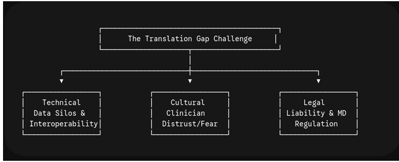
.Technical Barriers (Data Silos & Interoperability)
The Problem: Hospital systems rarely talk to each other seamlessly. A model trained to perfection on an Epic EHR platform at a major academic center often fails completely when deployed on a Cerner platform at a rural community hospital.
Prompt to use: “If a model relies on structured lab inputs, what happens when it encounters a hospital where those specific labs are written as free-text notes?” ### Cultural Barriers (Clinician Distrust & Alarm Fatigue)
The Problem: Clinicians face constant alert fatigue. If an AI model flags a sepsis risk with a high false-positive rate, doctors will quickly turn off or ignore the system entirely. Additionally, a lack of explainability leads to a “black box” issue where physicians don’t trust a recommendation they can’t verify.
Prompt to use: “Would you feel comfortable altering a patient’s care plan based on an AI alert if the model couldn’t show you the data reasoning behind its decision?” ### Legal & Regulatory Barriers (Liability & Accountability)
The Problem: The legal landscape remains undefined. If an algorithm misses a tumor on a mammogram, liability lines blur between the radiologist who signed off, the hospital that bought the tool, and the software company that engineered the model.
Prompt to use: “If a tool is labeled as a ‘clinical decision support aid,’ who is ultimately accountable when a missed finding causes patient harm?”
Summary wrap-up
Key Takeaway: Moving ML/AI out of a research lab and into a live clinical workflow isn’t just a coding challenge. Success requires matching data types to the right model architectures, ensuring our technical systems can actually share data, and building clear interfaces that earn the trust of clinical teams.
- Computer Vision (Breast Cancer): Models analyze pixel-level gradients and density variations to flag early-stage microcalcifications that human eyes might miss during a long shift.
- Predictive Analytics (Sepsis/Risk): Tabular models monitor continuous streams of patient vitals over time, spotting early systemic trends (like dropping blood pressure paired with rising heart rate) hours before full clinical onset.
- Genomics (Sequence Data): Algorithms treat DNA sequences (\(A, T, C, G\)) like languages, utilizing transformer models to find long-range genetic mutations linked to rare diseases.
Content from Limitations & Creating Your Own Model
Last updated on 2026-07-05 | Edit this page
Estimated time: 30 minutes
Overview
Questions
- “If an AI model misdiagnoses a patient, who should carry the ultimate responsibility: the doctor who used it, the hospital that bought it, or the data scientist who built it?”
- “What is one manual, repetitive task in your specific domain that you would happily hand over to an AI assistant tomorrow if you knew it was safe?”
Objectives
- Recognize the ethical and technical boundaries of AI, specifically regarding algorithmic bias and data privacy.
- Deconstruct the high-level, end-to-end pipeline required to build and deploy a compliant medical AI model.
- Shift the mindset from “AI replacing humans” to “AI amplifying human capability.”
Expansion: General Limitations of AI
Core Concept: Math Patterns vs. Clinical Context
When an AI model generates a medical diagnosis, it is easy to mistakenly assume the machine is “thinking” like a clinician. It isn’t. An AI possesses zero common sense and no actual understanding of human physiology.
Consider a chest X-ray model presented with a scan where a patient has accidentally swallowed a coin. The AI has no concept of a stomach, the mechanics of choking, or what a coin even is. Instead, it simply maps mathematical correlations across a grid of pixels, relying entirely on the consistency of statistical patterns.
Because it operates on statistics rather than understanding, it is incredibly fragile. If those data patterns shift even slightly in the real world—or if they were flawed from the very beginning—the model will output a prediction that looks incredibly confident, while being completely wrong.
This is very similar to what was found during the GEMINI project
Correlation \(\neq\) Causation
Machines are pattern-matchers, not logicians. If a dataset shows that patients who receive a specific temporary baseline medication happen to survive longer due to independent clinical routing, the model may conclude the medication is a miraculous cure, completely missing the true underlying clinical reason. A way to imagine this is that the machine is in a bubble and only understands what it taught/sees.
Failure Mode 1: “Garbage In, Garbage Out”
When bad data enters an algorithm, the AI doesn’t break down with an error message it builds a highly polished, dangerous model out of that bad data. In short, the model is a summation of everything it has been fed. The problem here is that “bad data”, is a very simple term governing alot issues and sometimes its not clear what could be considered it.
Common issues with data
Below are examples of what can be considered “bad” or problematic data:
- Significant Biases and Underrepresented Minority Groups: Machine learning models mirror the data they are fed, meaning they inherently absorb any biases present in the dataset. If a specific class or group is underrepresented, the model may fail to predict it entirely, or it might default to predicting only the majority class. Think of a model like a river: if the river forks, the water naturally follows the path of least resistance. Similarly, a model will take the easiest path to minimize error, requiring deliberate intervention and adjustment to ensure it performs fairly and accurately.
- Poor Quality Images: While clinical data often avoids this issue due to strict standardization protocols, it can still occur. If a model is trained on highly blurry images where the target object is barely visible, it will struggle to generalize. You cannot expect a model trained on degraded data to function correctly when tested on clean, high-resolution images.
- Missing Values: Missing data poses a significant challenge because the reason for the absence matters. A blank space could represent crucial context (e.g., a intentional omission), or it could simply mean a piece of equipment failed to record the data. Treating these two scenarios the same can lead to severe consequences during training. Furthermore, missing fields are sometimes improperly filled with zeros. Because a value of zero carries its own specific meaning, any data imputation must be handled with the correct context-aware methodology.
- Incorrect Data: While similar to missing values, incorrect data presents a distinct hazard—especially when it goes undetected. If a model unknowingly trains on corrupted or inaccurate data, it learns incorrect relationships and patterns, fundamentally undermining its real-world performance.
 .
.
Failure Mode 2: Model Brittleness & The Generalization Gap
An AI model’s performance can drop sharply when moving between hospital environments. This drop is known as Dataset Shift or The Generalization Gap.
The Illusion of Performance: “Shortcut Learning”
When we train a deep learning network on images from a single, high-tech facility, the model often takes an unhelpful shortcut to maximize its accuracy score. It learns to recognize the specific signatures of that hospital’s hardware, scan markers, or patient protocols rather than the actual medical pathology.
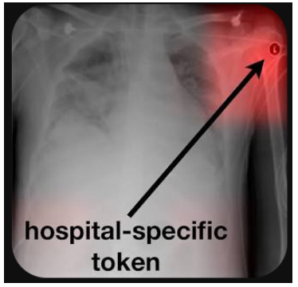
.A Real-World Diagnostic Failure Case Study
Consider an AI model built to spot pneumonia on chest radiographs:
- The Training Site (London Academic Center): The model is trained on thousands of scans from top-tier digital imaging suites. In these suites, stable, ambulatory patients stand up for clean, crisp posterior-anterior (PA) views.
- The Shortcut: The model notices that the highest-quality scans almost always belong to stable patients, while low-quality, high-noise scans taken by portable bedside units belong to critically ill patients in the ICU. The model covertly learns to classify “portable machine noise” as an indicator of severe lung disease.
- The Deployment Site (Rural Clinic): The model is deployed to a community clinic that relies entirely on an older, portable X-ray unit for all patients due to space constraints.
- The Crash: Because every single image coming out of the rural clinic contains high noise and lower contrast, the model’s performance breaks down completely. It continuously flags healthy patients as having severe pneumonia simply because it confuses the older machine’s background noise with the markers of a critical ICU case.
Core Concept: The High Stakes of Clinical Software
If a music streaming app has a software bug, you get a bad song recommendation. If a commercial text predictor glitched, it typoed a text message. But in healthcare, a software bug or a hidden algorithmic flaw is a direct threat to patient safety. When we integrate machine learning into patient care, we cannot manage it like standard consumer tech. We have to wrestle with deep historical biases, navigate complex legal accountability frameworks, and protect patient privacy under the strictest data laws on earth.
Challenge A: The Dataset Bias Trap
Algorithms do not have moral compasses; they are historical mirrors. If the data used to train an AI model reflects societal or systemic gaps in healthcare access, the model will codify and supercharge those disparities under the guise of objective mathematics.
The Fitzpatrick Scale Disparity in Dermatology
In medical computer vision, skin cancer screening tools rely heavily on image pattern recognition. A historical problem is that major open-source dermatology training repositories (like the ISIC archive) have historically consisted of images taken from individuals with lighter skin tones.
- The Systemic Drop: When an algorithm trained primarily on Fitzpatrick Types 1–3 (lighter skin) is asked to evaluate a lesion on Fitzpatrick Types 5–6 (darker skin), its diagnostic accuracy drops precipitously.
- The Clinical Consequence: The model fails to recognize the edge boundaries, color variations, or texture changes of a malignant melanoma against a darker background melanin index. This leads directly to higher false-negative rates and delayed, late-stage cancer diagnoses for minority patient groups.
 .
.
Challenge B: The Black Box & Explainability (XAI)
Deep learning models operate by routing inputs through millions of abstract mathematical connections. This yields a Black Box problem: an input goes in, an output comes out, but the exact clinical logic remains completely invisible.
Moving Past the Black Box with SHAP & LIME
Physicians have an ethical and legal duty of care. You cannot prescribe a aggressive treatment protocol or send a patient to emergency surgery simply because a model generated a high risk score. You need to know why. Medicine solves this using Explainable AI (XAI) frameworks. The two industry standards are:
- SHAP (SHapley Additive exPlanations): Uses cooperative game theory to calculate the exact structural contribution of each medical feature to the final prediction.
- LIME (Local Interpretable Model-agnostic Explanations): Purposely perturbs the data around a single patient to see which variables cause the prediction to flip.
Reading a SHAP Force Plot
When integrated into an Electronic Health Record (EHR), an XAI tool transforms a blind risk percentage into an actionable diagnostic map.
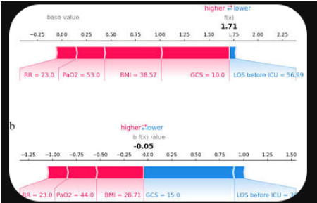
.As shown in the force plot visualization above, the model reveals its internal decision-making path for individual patients:
- The Baseline Value: The system starts at a standard population risk baseline.
- The Dynamic Vectors: Clinical variables act as directional forces. Red bars push the patient’s score higher toward a critical alert threshold, while blue bars pull the prediction down toward safety.
- Clinical Verification: A clinician can quickly review the chart and see that a high risk score was driven specifically by a high respiratory rate (RR = 23.0) paired with a compromised oxygenation status (PaO2 = 53.0), allowing them to clinically validate the AI’s warning.
Challenge C: Data Privacy & Sovereign Borders
Tech giants scale their businesses by collecting massive consumer data pools into centralized clouds. In medicine, strict privacy frameworks like HIPAA (Health Insurance Portability and Accountability Act) and GDPR (General Data Protection Regulation) make this central gathering approach an operational and legal impossibility.
 .
.
The Solution: Federated Learning
To train powerful models without moving highly confidential patient files across institutional boundaries, medical networks utilize Federated Learning architectures.
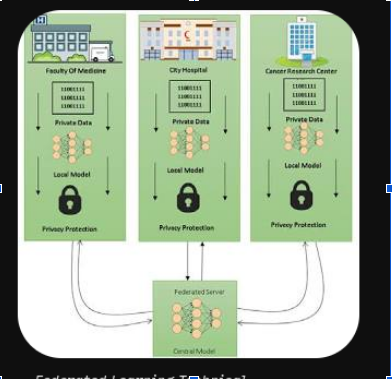
.Rather than forcing healthcare networks to pool private patient data into a vulnerable central repository, federated learning flips the pipeline completely:
- Local Preservation: The raw data stays safely behind local firewall networks at individual facilities (e.g., individual hospitals, research centers, or universities).
- Model Dissemination: A blank, unconfigured neural network model is sent out from a central federated server to each individual site.
- Local On-Site Training: The model trains locally on each hospital’s local data servers. No patient charts, names, or identifiers ever leave the building.
- Global Aggregation: The sites send only their mathematical model adjustments (weight updates) back to the central server. The central server blends these updates into a master algorithm that benefits from the collective knowledge of multiple hospitals while maintaining absolute data confidentiality.
Summary Wrap-Up for the Session
Key Takeaway: Ethical healthcare AI requires moving past the simple metric of “accuracy.” We must actively inspect our datasets for demographic gaps, use XAI tools like SHAP force plots to keep clinical logic transparent, and utilize decentralized frameworks like federated learning to respect sovereign data walls.
How to Build a Model: The Bare Minimum
Core Concept
“If you ever want to launch an AI research project or build a tool for your department, you need to understand that coding is only about 10% of the timeline. The real work is data governance, labeling, and workflow integration. Let’s walk through the actual clinical blueprint.”
Frameworks & Data Scaling
Transitioning machine learning from theory to implementation requires selecting an optimal framework and engineering structured data pipelines. For deep learning, PyTorch provides an intuitive, dynamic computation graph for debugging complex networks inline, while TensorFlow/Keras optimizes production deployments. For tabular data, Scikit-learn manages classical algorithms, while XGBoost and LightGBM typically yield superior predictive accuracy. For genomic sequences or text, Hugging Face standardizes pre-trained transformer blocks.
Raw features must be mathematically transformed into optimized tensors to ensure gradient stability and network convergence:
- Standardization: Translates data to a mean of 0 and a standard deviation of 1, preserving outlier relative positioning.
- Min-Max Scaling: Compresses arrays into a rigid \([0, 1]\) boundary, which is essential for uniform structures like image pixel matrices.
- Embedding Layers: Replace memory-intensive one-hot encoding by mapping high-cardinality discrete categories into dense, low-dimensional continuous vector spaces.
Execution Pipelines & Infrastructure
To maximize hardware throughput and eliminate data starvation—where an accelerator sits idle waiting for disk reads—workflows decouple data retrieval from model execution. Custom data loaders use background CPU cores to batch, shuffle, and apply data augmentations asynchronously in parallel with the GPU’s forward-backward passes.
As models and data scale beyond interactive notebook capacity, workflows are modularized into non-interactive scripts for High-Performance Computing (HPC) clusters managed by orchestrators like SLURM. Developers submit batch scripts requesting specific hardware isolation.
Wrap-Up & Next Steps (10 Mins)
Final Closing Thoughts
“As we close out this foundational series, remember this fundamental truth: The goal of AI in healthcare is not to replace the clinician. The true promise of these tools is to automate the repetitive, administrative, and exhausting tasks—the endless documentation, the initial sorting of normal scans, the manual data tracking. By offloading that cognitive load to machines, we can give human clinicians their most valuable asset back: time. Time to focus on complex cases, and time to spend at the bedside doing what humans do best—caring for patients.”
- The Bias Trap: Models trained on narrow demographics (e.g., primarily Caucasian skin types for dermatology AI) drop significantly in accuracy when applied to diverse populations.
- Brittleness & Drift: A model optimized for a high-tech metropolitan hospital will often fail in a rural clinic due to differences in equipment, patient demographics, and charting habits (“Garbage In, Garbage Out”).
- The Model Lifecycle: Building a model is only 20% math. The other 80% is data governance (HIPAA/GDPR compliance), establishing an expert “ground truth” through manual labeling, and workflow integration.